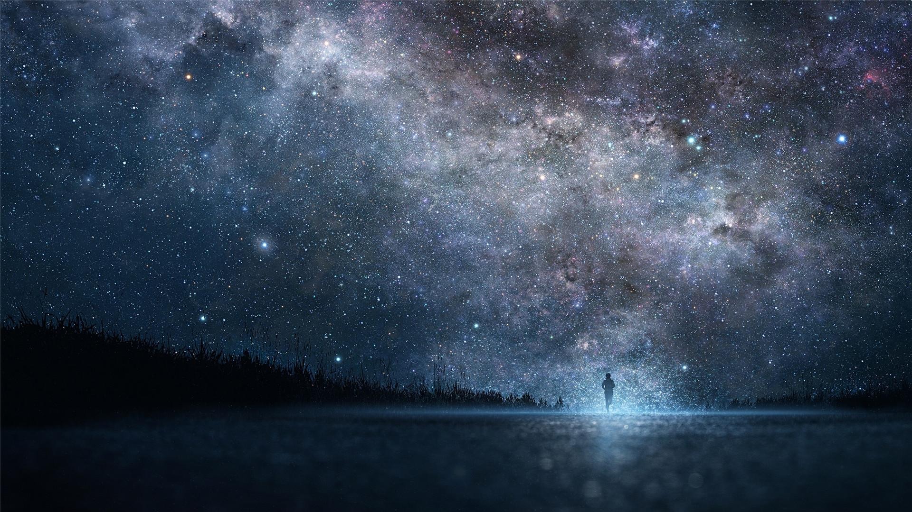
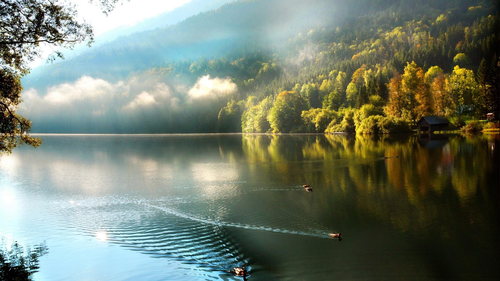

I am studying at the Hong Kong Polytechnic University
As an EIE student, I am keen at circuit board design
My dream is to travel around the world some day
When I become old, I might move to countryside with my guitar
The sky is still a light blue, in the twinkling of an eye, there is a red glow in the East, the red glow is slowly expanding, and in a short time, it will dye a small half of the sky red. The color was lovely red. After a while, the little half face of the sun appeared in that place.
When the morning sun sprinkles into our warm bedroom, the busy day starts again, the alarm clock starts to ring, everyone sleepy, get up from the bed, busy shuttle between the canteen and the classroom.
 The beautiful sunshine in the distance is shining on the earth. Shuruo, long. The fragrance of red sandalwood permeates the spring, filling all the emptiness between heaven and earth. Under the sun, it is a fine dust street, murmuring innocence, filled with the once unfathomable solitary and elegant shadow.
The beautiful sunshine in the distance is shining on the earth. Shuruo, long. The fragrance of red sandalwood permeates the spring, filling all the emptiness between heaven and earth. Under the sun, it is a fine dust street, murmuring innocence, filled with the once unfathomable solitary and elegant shadow.
At the end of self-study that night, I looked up at the sky. Several big and bright stars were hanging in the night sky, as if people in the sky were carrying lanterns to inspect the vast space. It's very beautiful. I wrapped my clothes tightly and walked back to my bedroom slowly in the beautiful night.
